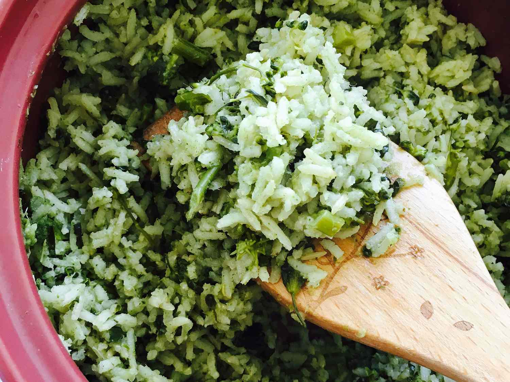

Brown Rice and Broccoli

Steamed brown rice mixed with sautéed broccoli. This is a great side dish, and I honestly enjoy it more than my main dishes.
Ingredients
- Brown rice
- Broccoli
- Salt
- Pepper
- Olive oil
Steps
- Measure out brown rice into a pot, 1/4 cup is a single serving
- Put double that volume in water into the pot (if you used 1/4 cup of rice then use 1/2 cup of water)
- Season the water with salt, 1/8 tsp of salt per 1/4 cup of rice
- Heat pot on high heat until water begins to boil
- Turn heat to low, and cook for 45 minutes
- While rice is cooking prep and cook the broccoli
- Use a food processor to blend the broccoli to small chunks, or cut it into small pieces (include stalk)
- 1 cup of broccoli chunks is a serving, if there are any leftovers they can be stored in the refrigerator for a few days
- Heat pan to medium high heat with some olive oil
- Put the broccoli in the heated pan and season with salt and pepper
- Sauté the broccoli, stir continuously
- This should only take a couple of minutes, as it cooks the broccoli will turn a darker green and start to brown
- When the broccoli is cooked to your liking take it off of the heat
- Mix together the rice and broccoli